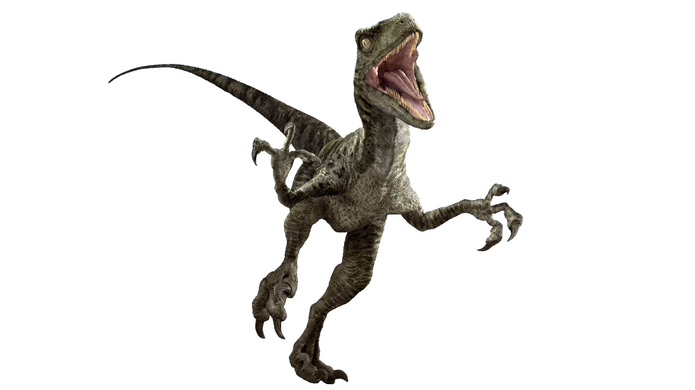
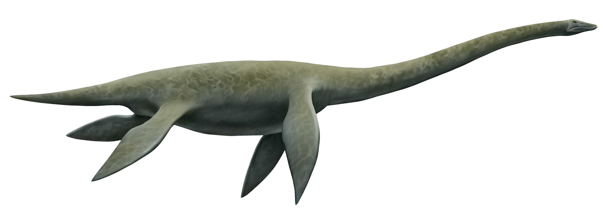
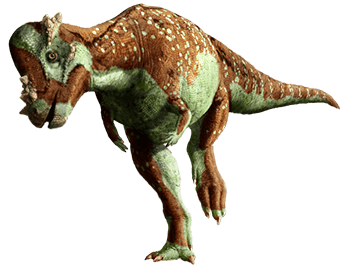

Types of Dinos
Tyrannosaurs
 Tyrannosaurus rex was one of the largest meat-eating dinosaurs that ever lived. Everything about this
ferocious predator, from its thick, heavy skull to its 4-foot-long (1.2-meter-long) jaw, was designed
for maximum bone-crushing action.
Tyrannosaurus rex was one of the largest meat-eating dinosaurs that ever lived. Everything about this
ferocious predator, from its thick, heavy skull to its 4-foot-long (1.2-meter-long) jaw, was designed
for maximum bone-crushing action.
Triceratops
 The Triceratops is easily recognized thanks to the three horns found on its face as well as its large
body and the unique frill around its head. The name ‘Triceratops’ comes from the Greek language, with
‘tri’ meaning three and ‘keratops’ meaning horned face.
The Triceratops is easily recognized thanks to the three horns found on its face as well as its large
body and the unique frill around its head. The name ‘Triceratops’ comes from the Greek language, with
‘tri’ meaning three and ‘keratops’ meaning horned face.
Stegosaurus
 Stegosaurus was a large, plant-eating dinosaur that was about the size of a bus and carried around two
rows of bony plates along its back that made it appear even bigger.
Stegosaurus was a large, plant-eating dinosaur that was about the size of a bus and carried around two
rows of bony plates along its back that made it appear even bigger.
Velociraptor

Velociraptor comes from the Latin words "velox" (swift) and "raptor" (robber or plunderer). A member of
the Dromaeosauridae family of small- to medium-sized birdlike dinosaurs, Velociraptor was roughly the
size of a small turkey and smaller than others in this family of dinosaurs.
Plesiosaurus

Plesiosaurs were large, marine reptiles from the Mesozoic Era that ranged in size from 8-46 feet long
(2.5-14 m). They had four flippers, sharp teeth in strong jaws, and short, pointed tails. Plesiosaurs
may have evolved from the Nothosaurs or Pistosaurus, a mid-Triassic reptile.
Pachycephalosaurus

Pachycephalosaurus; (meaning "thick-headed lizard," from Greek pachys "thick", kephale "head" and sauros
"lizard") is a genus of pachycephalosaurid dinosaurs. It lived during the Late Cretaceous Period
(Maastrichtian stage) of what is now North America. It was an herbivorous creature which is primarily
known for its thick skull which was believed to be used in intra-species combat.
Go back to top